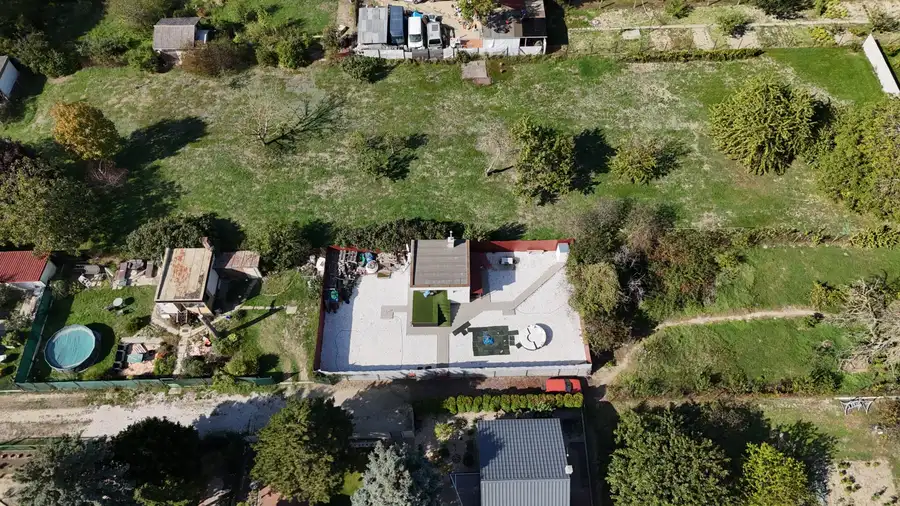
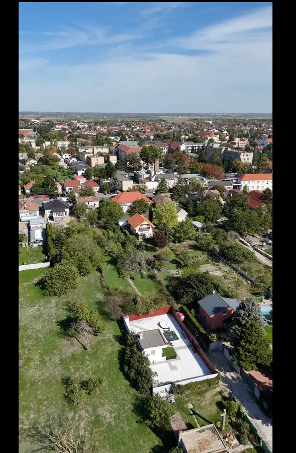

AZ. 4,5-árový pozemok v Podunajských Biskupiciach | Stavba 56 m² + možnosť prístavby 50 m²
Podunajské Biskupice, Bratislava



- Plocha450 m²
- VlastníctvoOsobné
O nehnuteľnosti
Ponúkame na predaj 4,5-árový pozemok v Bratislave – Podunajských Biskupiciach s existujúcou stavbou o výmere 56 m².Pozemok je vedený ako záhrada. Súčasnú stavbu je možné podľa dostupných možností rozšíriť o ďalších približne 50 m². Pri realizácii prístavby je potrebné počítať s tým, že existujúca časť stavby musí mať samostatný vstup.Pozemok ponúka priestor na vytvorenie vlastného zázemia v pokojnom prostredí, pričom zároveň zostávate v rámci Bratislavy.Cena: 200 000 €Pre viac informácií o možnostiach využitia a stavebných úpravách ma neváhajte kontaktovať.📞 Atila Baka | Andel & Zachar 📱 0907 099 742 📧 baka@andelzachar.skDispozícia:Lokalita:Lokalita Podunajských Biskupíc ponúka pokojné prostredie s množstvom zelene a zároveň dobrú dostupnosť do centra Bratislavy. V blízkosti sa nachádza kompletná občianska vybavenosť, MHD, železničná stanica, školy, obchody a služby. Výhodou sú tiež možnosti športu, oddychu a cykloturistiky.
Parametre
- Druh
- Záhrada
- Dátum zverejnenia
- 05. 10. 2026
- Elektrina
- Na pozemku - 230 V
- Odpadové vody
- Na pozemku - Žumpa
- Plocha pozemku
- 450 m²
- Plyn
- Nedostupné
- Pripravenosť k výstavbe
- Predbežný súhlas
- Terén pozemku
- Mierne svahovitý
- Typ
- Predaj
- Vlastníctvo
- Osobné
- Voda
- Na pozemku - Studňa